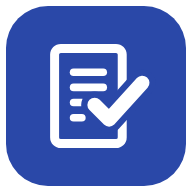

BelegwächterDatenschutzerklärung
1. Verantwortliche
Verantwortlich für die Datenverarbeitung im Sinne der Datenschutz-Grundverordnung (DSGVO) ist:
Pelin Mösch (AraStudio)
Johannesweg 42
53937 Schleiden
Deutschland
E-Mail: aranea.studioo@gmail.com
Ein Datenschutzbeauftragter ist nicht bestellt, da hierzu keine gesetzliche Pflicht besteht.
2. Überblick
Belegwächter ist eine App zur Verwaltung von Garantien und Rechnungen. Die App ist so gestaltet, dass Ihre Einträge ausschließlich auf Ihrem Gerät verarbeitet werden. Es ist kein Benutzerkonto erforderlich. Die App enthält keine Werbung und verwendet keine Analyse-, Tracking- oder Werbedienste. Ihre gespeicherten Einträge werden weder an mich noch an Dritte übermittelt.
Diese Datenschutzerklärung gilt für die Android-App aus dem Google Play Store sowie für die Web-Version der App.
3. Verarbeitung auf Ihrem Gerät
Art der Daten: Angaben, die Sie selbst eingeben oder aus einer Rechnung übernehmen, insbesondere Produktname, Kategorie, Kaufdatum, Kaufpreis, Händler, Serien- und Modellnummer, Garantiezeit, Erinnerungen und Notizen, sowie Rechnungen als Foto oder PDF.
Zweck: Verwaltung Ihrer Garantien und Rechnungen, Berechnung von Garantiefristen und Anzeige von Erinnerungen.
Speicherort: ausschließlich im lokalen Speicher der App auf Ihrem Gerät. Ich habe keinen Zugriff auf diese Daten.
Speicherdauer: bis Sie die Daten löschen, z. B. einzeln, über „Alle Daten löschen“ in den Einstellungen oder durch Deinstallation der App bzw. Löschen der Website-Daten im Browser.
Zusätzlich speichert die App einige Einstellungen auf Ihrem Gerät, z. B. das gewählte Farbschema und den Zeitpunkt des letzten Backups. Diese Einstellungen werden ausschließlich lokal auf Ihrem Gerät gespeichert und dienen der Bereitstellung und Personalisierung der von Ihnen gewünschten Funktionen. Cookies werden nicht verwendet.
4. Erfassung von Rechnungen (Kamera, Dateien, Texterkennung)
Die App greift nur dann auf die Kamera oder auf Dateien zu, wenn Sie selbst eine Rechnung scannen oder hochladen. Für den Zugriff auf die Kamera ist Ihre Erlaubnis im Android-System erforderlich, die Sie jederzeit in den Android-Einstellungen widerrufen können. Beim Scannen wird das Kamerabild ausschließlich auf Ihrem Gerät ausgewertet; gespeichert wird nur das aufgenommene Foto als Rechnung.
Die Texterkennung, mit der Angaben aus Rechnungen automatisch eingetragen werden, läuft vollständig auf Ihrem Gerät. Fotos und PDF-Dateien werden dafür nicht übertragen. Die Programmdateien der Texterkennung (Tesseract) werden beim ersten Gebrauch einmalig vom selben Server geladen wie die App selbst (siehe Abschnitt 7) und anschließend auf Ihrem Gerät zwischengespeichert. Andere Server werden dabei nicht kontaktiert, und es werden keine Nutzungs- oder Diagnosedaten übermittelt.
Fügen Sie Text aus einer anderen App ein, z. B. aus Google Lens, gelten für die dortige Verarbeitung die Datenschutzbestimmungen des jeweiligen Anbieters.
5. Benachrichtigungen
Wenn Sie Benachrichtigungen erlauben, prüft die App regelmäßig auf Ihrem Gerät, ob eine Garantie bald abläuft, und zeigt dann eine Benachrichtigung an. Dafür werden keine Daten an einen Server gesendet. Sie können die Erlaubnis jederzeit in der App oder in den Android-Einstellungen widerrufen.
6. Backups, PDF-Export und Kalenderdateien
Backups, PDF-Exporte und Kalenderdateien werden nur auf Ihre Veranlassung erstellt und dort gespeichert, wo Sie es festlegen, in der Regel im Ordner „Download“ Ihres Geräts. Backup-Dateien sind nicht verschlüsselt; wer eine solche Datei besitzt, kann die darin enthaltenen Einträge einsehen. Bitte bewahren Sie diese Dateien daher sorgfältig auf. Speichern Sie Dateien bei einem Cloud-Dienst wie Google Drive oder geben Sie sie an Dritte weiter, gelten die Bestimmungen des jeweiligen Anbieters.
7. Bereitstellung der App (Hosting)
Die Dateien der App werden über GitHub Pages bereitgestellt, einen Dienst der GitHub, Inc., 88 Colin P. Kelly Jr. Street, San Francisco, CA 94107, USA. Beim Abruf der App verarbeitet GitHub technisch notwendige Zugriffsdaten, insbesondere Ihre IP-Adresse, Datum und Uhrzeit des Abrufs sowie Angaben zu Browser und Betriebssystem, um die Dateien auszuliefern und die Sicherheit des Dienstes zu gewährleisten. Diese Zugriffsdaten werden mir von GitHub nicht als personenbezogene Nutzerdaten zur Verfügung gestellt; GitHub Pages stellt Seitenbetreibern keine Zugriffsprotokolle oder Besucherstatistiken bereit.
Rechtsgrundlage ist mein berechtigtes Interesse an einer sicheren und zuverlässigen Bereitstellung der App (Art. 6 Abs. 1 lit. f DSGVO). Dabei können Daten in die USA übermittelt werden. GitHub stützt solche Übermittlungen nach eigenen Angaben auf das EU-US Data Privacy Framework sowie auf Standardvertragsklauseln der Europäischen Kommission. Weitere Informationen finden Sie in der Datenschutzerklärung von GitHub. Ihre in der App gespeicherten Einträge werden dabei nicht übertragen.
8. Google Play
Wenn Sie die App über Google Play installieren, verarbeitet Google dabei Daten in eigener Verantwortung, z. B. für Download, Aktualisierungen und gegebenenfalls Zahlungen. Über die Google Play Console stellt Google mir zusammengefasste und technische Informationen zu meiner App zur Verfügung, beispielsweise Installationszahlen und technische Stabilitätsdaten wie Absturz- und ANR-Daten. Diese Daten enthalten keine Inhalte Ihrer in der App gespeicherten Einträge. Eigene Analyse-, Tracking- oder Absturzdienste (z. B. Google Analytics oder Firebase Crashlytics) sind in der App nicht eingebunden. Weitere Informationen finden Sie in der Datenschutzerklärung von Google.
9. Kontaktaufnahme per E-Mail
Wenn Sie mich per E-Mail kontaktieren, verarbeite ich Ihre E-Mail-Adresse und den Inhalt Ihrer Nachricht, um Ihre Anfrage zu bearbeiten. Rechtsgrundlage ist Art. 6 Abs. 1 lit. b DSGVO, soweit Ihre Anfrage die Nutzung der App betrifft, im Übrigen mein berechtigtes Interesse an der Beantwortung von Anfragen (Art. 6 Abs. 1 lit. f DSGVO). Ihre Nachricht wird gelöscht, sobald die Anfrage abschließend bearbeitet ist und keine gesetzlichen Aufbewahrungspflichten entgegenstehen. Das E-Mail-Postfach wird von Google (Gmail) bereitgestellt.
10. Empfänger, automatisierte Entscheidungen und Datensicherheit
Über die in dieser Erklärung genannten Dienstleister hinaus werden keine personenbezogenen Daten an Dritte weitergegeben oder verkauft. Eine automatisierte Entscheidungsfindung einschließlich Profiling (Art. 22 DSGVO) findet nicht statt.
Die App wird ausschließlich über eine verschlüsselte Verbindung (HTTPS) bereitgestellt. Ihre Einträge sind durch die Sicherheitsmechanismen Ihres Geräts geschützt; bitte verwenden Sie eine Bildschirmsperre.
11. Ihre Rechte
Sie haben nach der DSGVO das Recht auf Auskunft (Art. 15), Berichtigung (Art. 16), Löschung (Art. 17), Einschränkung der Verarbeitung (Art. 18) und Datenübertragbarkeit (Art. 20). Eine erteilte Einwilligung können Sie jederzeit mit Wirkung für die Zukunft widerrufen (Art. 7 Abs. 3 DSGVO). Da Ihre Einträge ausschließlich auf Ihrem Gerät gespeichert sind, können Sie diese jederzeit selbst einsehen, als Backup exportieren und löschen.
Widerspruchsrecht: Soweit eine Verarbeitung auf Art. 6 Abs. 1 lit. f DSGVO beruht, können Sie aus Gründen, die sich aus Ihrer besonderen Situation ergeben, jederzeit Widerspruch einlegen (Art. 21 DSGVO). Wenden Sie sich dazu an die oben genannte E-Mail-Adresse.
Beschwerderecht: Sie haben das Recht, sich bei einer Datenschutz-Aufsichtsbehörde zu beschweren (Art. 77 DSGVO). Zuständig ist die Landesbeauftragte für Datenschutz und Informationsfreiheit Nordrhein-Westfalen, www.ldi.nrw.de.
12. Änderungen dieser Datenschutzerklärung
Ich passe diese Datenschutzerklärung an, wenn sich die App, die eingesetzten Dienste oder die Rechtslage ändern. Es gilt die jeweils in der App und unter der Internetadresse dieser Seite veröffentlichte Fassung.